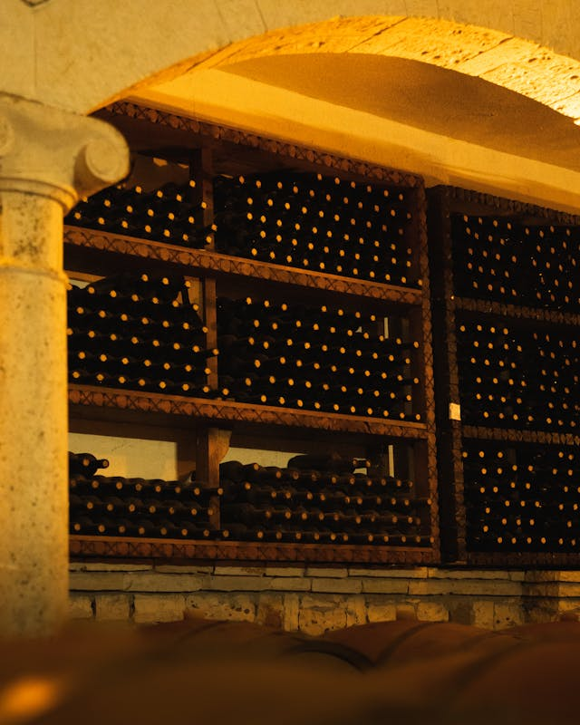
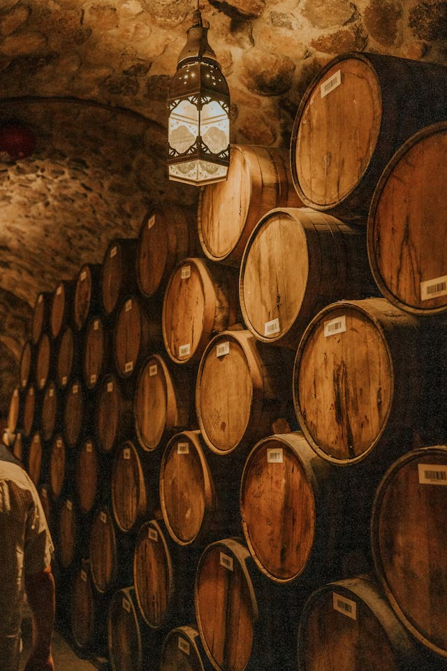
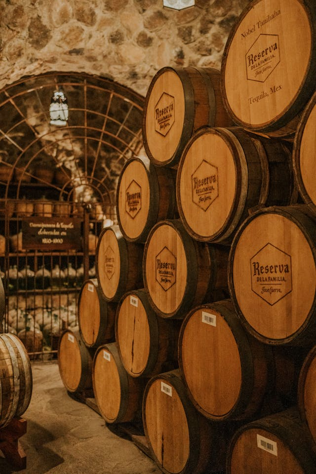

Naša vinarija je nastala iz ljubavi prema vinogradima i dugogodišnje porodične tradicije koja se prenosi sa kolena na koleno.
Svaki čokot pažljivo negujemo tokom cele godine, verujući da se vrhunsko vino rađa još u vinogradu.
Spoj savremenih tehnologija i tradicionalnih metoda proizvodnje omogućava nam da sačuvamo autentičnost ukusa i karakter svakog grozda koji uberemo.
Posvećeni smo kvalitetu u svakom koraku – od ručne berbe grožđa do pažljive selekcije i odležavanja vina u kontrolisanim uslovima.
Naš cilj nije samo da proizvedemo vino, već da u svakoj boci ispričamo priču o zemlji, suncu i vremenu koje je oblikovalo njegov ukus.
Posebnu pažnju poklanjamo detaljima, jer verujemo da upravo oni prave razliku između dobrog i izuzetnog vina.


Naša misija je da kroz svaku bocu prenesemo strast, znanje i posvećenost koje ulažemo u proizvodnju.
Težimo tome da naša vina budu simbol kvaliteta, pouzdanosti i autentičnog karaktera našeg podneblja.
Verujemo da pravo vino spaja ljude, oplemenjuje trenutke i ostavlja snažan utisak koji se pamti.